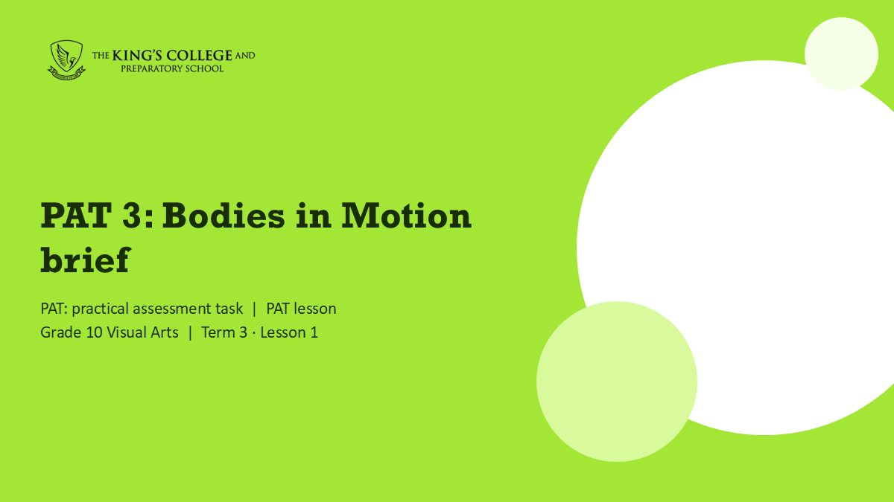

Term 3 · Lesson 1 · PAT lesson
PAT 3 brief: the portrait
Start here
Today I will
- Understand the PAT 3 portrait brief and its hand-in date
- Take useful reference photos of my face in strong side light
- Start a portrait research page in my VJ
If someone had to recognise you from only the shadows on your face, what would they notice first?
Words to Know
| Word | Meaning |
|---|---|
| Portrait | An artwork that shows a particular person, usually focusing on the face and expression. |
| Self-portrait | A portrait the artist makes of himself or herself, often from a mirror or a photo. |
| Proportion | The size of the parts of the face compared to each other and to the whole head. |
| Reference | A photo, sketch or object you look at closely while you make an artwork. |
| Side light | Light that comes from one side, so half the face is lit and half is in shadow. |
| PAT | Practical Assessment Task: the practical project that counts towards your term mark. |
Slides

Notes
The PAT 3 brief: the portrait and self-portrait; the activities (anatomy studies, reductive self-portrait, composite portrait, painting) and the hand-in date.
PAT 3 at a glance
- 1. Anatomy studies: Drawings of the eye, nose, mouth and ear, then a proportion map of the whole head.
- 2. Reductive self-portrait: A charcoal self-portrait where you draw the light out of a dark ground with an eraser.
- 3. Composite portrait: A portrait built from parts of different images or media, held together by unity.
- 4. Painting: Skin-tone mixing and a painted portrait study in the VJ.
- Hand-in: All parts of PAT 3, with the VJ, are due in Week 7. Work done in class counts; plan your time.
What makes a good reference photo
- One strong light: Use a single lamp or a window to one side. Turn off overhead lights so the shadows stay clear.
- Clear shapes of shadow: Look for a dark side, a bright side and a small triangle of light on the shadow cheek.
- Plain background: A plain wall keeps attention on the face and makes the shapes easier to read later.
- Neutral expression: A calm face is easier to draw over several lessons than a big smile.
- Several angles: Take front, three-quarter and profile views, then choose the strongest one.
- Your own image: Photos of yourself are personal. Keep them on your own device and print only for your VJ.
Light shows the shape of a face; shadow shows its form.

David praises God for making him 'fearfully and wonderfully'. How might that change the way you look at your own face while you draw it?
Practical
You need: Learners' own phones or the class camera, desk lamp, VJ, glue, pencils
Reference photos and a portrait research page
- In pairs, take turns to sit beside the lamp while your partner photographs you with your own phone.
- Take at least five photos: front, three-quarter and profile, with the light from one side.
- Choose your two strongest photos and say why in one sentence each.
- In your VJ, set up a research page titled 'PAT 3: The portrait' with the due date.
- Collect two artist portraits from the History booklet and note how each artist uses light.
- Annotate: what mood does side light create, and which shapes of shadow will you need to draw?
PAT 3 is due in Week 7.
Test yourself
- Name the four parts of PAT 3.
- Why is side light better than front light for a portrait reference?
- When is PAT 3 due?
Show answers
1. Anatomy studies, the reductive self-portrait, the composite portrait and the painting. 2. It creates clear light and dark shapes that show the form of the face; front light flattens it. 3. Week 7.
Finished early?
See why side light beats front light for portraits.
- Draw two small egg-shaped heads in your VJ.
- Shade the first as if lit from the front: almost no shadow.
- Shade the second as if lit from one side: half light, half shadow, with a small triangle of light on the shadow cheek.
- Write one sentence on which shows the form of the face better.